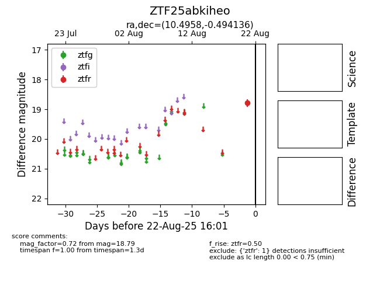

Target ZTF25abkiheo at 2025-08-22 16:26, see:
FINK: fink-portal.org/ZTF25abkiheo
Lasair: lasair-ztf.lsst.ac.uk/objects/ZTF25abkiheo
ALeRCE: alerce.online/object/ZTF25abkiheo
alt names
ZTF25abkiheo (ztf,alerce)
coordinates:
equatorial (ra, dec) = (10.4958,-0.49414)
galactic (l, b) = (117.6712,-63.26927)
photometry
last ztfr=18.79
1 ztfr detections
